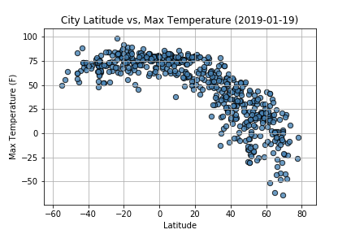

___________________________________________________________________________________________________________________________________________________________________________________

The purpose of this project was to analyze how weather changes as you
get closer to the equator based on multiple factors. To accomplish this analysis, data was
pulled from OpenWeatherMap, whom granted access to the data via API key and requests. The dataset
contained weather information in JSON file format for over 500 cities all over the world as of January 19th, 2019.
After sorting and formating the data, Matplotlib was used to plot various aspects of the
weather versus latitude. Factors looked at included: max temperature, cloudiness, wind speed
and humidity. This web dashboard provides the source data and visualizations created as part of analysis,
as well as explainations and descriptions of any trends and conditions witnessed.